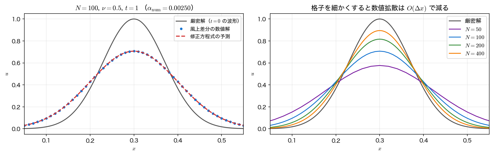

数値拡散と数値分散
前ページの最後の表には、見過ごせない数字があった。\(\nu=0.5\) の風上差分は安定だったが、1周した後のピーク値は \(0.7069\) ——初期値 \(1\) の 7 割に落ちている。発散したわけでもなく、振動したわけでもなく、ただなだらかに消えていく。
移流方程式の厳密解は振幅を1ミリも失わないのだから、この \(0.3\) は完全に手法の産物である。本ページでは、その正体が「方程式が書き換わってしまった」ことにあると示し、書き換わった先の方程式から失われる量を数値として予言する。
修正方程式：差分式が本当に解いている方程式
差分式は、狙った微分方程式を近似する。逆に見れば、差分式は狙ったものとは少し違う微分方程式を厳密に解いているとも言える。その「少し違う方程式」を修正方程式（modified equation）と呼ぶ。
風上差分 \(u_j^{n+1}=u_j^n-\nu(u_j^n-u_{j-1}^n)\) で実際にやってみよう。\(u\) を滑らかな関数としてテイラー展開する。
これを更新式に代入し、\(\nu=c\Delta t/\Delta x\) を使って \(\Delta t\) で割ると
ここで左辺の \(\partial_t^2 u\) を消す。主要項が \(\partial_t u=-c\,\partial_x u\) である以上、\(\partial_t^2 u=-c\,\partial_x\partial_t u=-c\,\partial_x(-c\,\partial_x u)=c^2\,\partial_x^2 u\) が成り立つ（時間微分を空間微分に置き換えるこの操作が修正方程式の要である）。代入して整理すると
風上差分は、移流方程式ではなく移流拡散方程式を解いている。 右辺の \(\alpha_{\rm num}\,\partial_x^2 u\) は誰も方程式に書いていない拡散項で、これを数値拡散（numerical diffusion）あるいは数値粘性（numerical viscosity）と呼ぶ。
この式は、前ページで観察した事実をすべて説明する。
- \(\alpha_{\rm num}\propto\Delta x\) ——格子を細かくすれば数値拡散は \(O(\Delta x)\) で減る。これが風上差分が1次精度であることの意味である。
- \(\alpha_{\rm num}\propto(1-\nu)\) ——\(\nu=1\) で数値拡散は厳密にゼロになる。前ページで「\(\nu=1\) では誤差が \(10^{-21}\)」だったことの、これが理由である。
- \(\nu>1\) では \(\alpha_{\rm num}<0\) ——負の拡散。拡散方程式を時間逆行させることに等しく、高周波が爆発的に増幅される。CFL 条件を破ったときの発散は、こう解釈することもできる。
数値拡散を定量的に検証する
修正方程式が単なる比喩でないことを、数値で確かめよう。例題1のガウス波
が拡散係数 \(\alpha_{\rm num}\) の拡散方程式に従うなら、時刻 \(T\) での波形は移動しながら幅が \(\sigma^2=\sigma_0^2+2\alpha_{\rm num}T\) に広がり、面積が保存するのでピーク値は
になるはずである。\(N=100\)、\(\nu=0.5\)、\(T=1\) なら \(\alpha_{\rm num}=0.0025\)、\(\sigma^2=0.005+0.005=0.01\) で、予測ピークは \(\sqrt{0.005/0.01}=0.707107\)。前ページの実測値 \(0.70689\) とすでに3桁一致している。

格子とクーラン数を変えた検証をまとめる（実行結果の表より）。
| \(N\) | \(\alpha_{\rm num}\) | 予測ピーク | 実測ピーク | 差 |
|---|---|---|---|---|
| 50 | 0.005000 | 0.577350 | 0.576707 | \(6.4\times10^{-4}\) |
| 100 | 0.002500 | 0.707107 | 0.706885 | \(2.2\times10^{-4}\) |
| 200 | 0.001250 | 0.816497 | 0.816440 | \(5.7\times10^{-5}\) |
| 400 | 0.000625 | 0.894427 | 0.894416 | \(1.1\times10^{-5}\) |
| 800 | 0.000313 | 0.942809 | 0.942807 | \(1.8\times10^{-6}\) |
格子を細かくするほど予測と実測の差が縮む——修正方程式が捨てた \(O(\Delta x^2)\) の項が効かなくなるからである。「数値拡散」は定量的に予言できる現象であって、漠然とした劣化ではない。
\(N=200\) に固定して \(\nu\) だけを変えると、\(\alpha_{\rm num}\propto(1-\nu)\) の依存性がそのまま現れる。
| \(\nu\) | \(\alpha_{\rm num}\) | 予測ピーク | 実測ピーク |
|---|---|---|---|
| 0.25 | 0.001875 | 0.755929 | 0.755894 |
| 0.40 | 0.001500 | 0.790569 | 0.790516 |
| 0.50 | 0.001250 | 0.816497 | 0.816440 |
| 0.80 | 0.000500 | 0.912871 | 0.912866 |
| 1.00 | 0.000000 | 1.000000 | 1.000000 |
CFL 条件ぎりぎりの \(\nu\) ほど正確という、初期値問題の常識と逆の性質に注意してほしい。第4〜6回の常微分方程式では \(\Delta t\) を小さくすれば必ず精度が上がったが、移流方程式では \(\Delta t\) を小さくすると数値拡散が増える。安定限界から遠ざかることは、ここでは安全ではない。
振幅と位相：増幅率の2つの顔
修正方程式はテイラー展開に頼るので、滑らかな解にしか使えない。もう一つの見方——フォン・ノイマン解析の増幅率——は不連続を含む場合にも意味をもち、しかも2種類の誤差を分離して見せてくれる。
厳密解 \(u=e^{\mathrm{i}k(x-ct)}\) に対して、1ステップの増幅率は
である。\(\lvert G_{\text{厳密}}\rvert=1\)（振幅は変わらない）、\(\arg G_{\text{厳密}}=-\nu\theta\)（位相はちょうど \(c\Delta t\) ぶん進む）。数値解法の \(G(\theta)\) がこれからずれる形は2通りある。
- \(\lvert G(\theta)\rvert<1\) ＝ 数値散逸（numerical dissipation）：波数ごとに振幅が失われる。短い波ほど強く減衰するので、波形はなまる。前節の数値拡散を波数空間から見たものである。
- \(\arg G(\theta)\ne-\nu\theta\) ＝ 数値分散（numerical dispersion）：波数ごとに伝わる速さが変わる。相対位相速度 \(c_{\rm num}/c=-\arg G/(\nu\theta)\) が \(1\) からずれると、波形は崩れる（成分がばらばらに進んで元の形に戻らない）。
先取り：Lax–Wendroff 法
分散の代表例として、次ページで導出する Lax–Wendroff 法 $$ u_j^{n+1}=u_j^n-\frac{\nu}{2}\bigl(u_{j+1}^n-u_{j-1}^n\bigr)+\frac{\nu^2}{2}\bigl(u_{j+1}^n-2u_j^n+u_{j-1}^n\bigr) $$ をここでは結果だけ借りる。増幅率は \(G=1-\nu^2(1-\cos\theta)-\mathrm{i}\nu\sin\theta\) である。この手法は2次精度で散逸が小さいかわりに、分散が主役になる。
\(\nu=0.5\) で両者を比べると次のようになる。
| \(\theta/\pi\) | 風上 \(\lvert G\rvert\) | 風上 \(c_{\rm num}/c\) | LW \(\lvert G\rvert\) | LW \(c_{\rm num}/c\) |
|---|---|---|---|---|
| 0.125 | 0.9808 | 1.0000 | 0.9995 | 0.9811 |
| 0.250 | 0.9239 | 1.0000 | 0.9919 | 0.9281 |
| 0.500 | 0.7071 | 1.0000 | 0.9014 | 0.7487 |
| 0.750 | 0.3827 | 1.0000 | 0.6735 | 0.4691 |
| 1.000 | 0.0000 | 1.0000 | 0.5000 | 0.0000 |
対照的である。風上差分は短い波を容赦なく削り（\(\theta=\pi/2\) で 1 ステップあたり \(0.707\) 倍、\(\theta=\pi\) では完全消去）、Lax–Wendroff 法はほとんど削らない（\(\theta=\pi/2\) で \(0.9014\)）かわりに速度を \(0.75\) 倍に遅らせる。
\(\nu=1/2\) の風上差分は「分散がない」わけではない
上の表で風上差分の \(c_{\rm num}/c\) が全波数で厳密に \(1.0000\) になっているのは、\(\nu=1/2\) という特別な値の偶然である。実際 \(\nu=1/2\) では $$ \mathrm{Re}\,G=\tfrac12(1+\cos\theta)=\cos^2\tfrac\theta2,\qquad \mathrm{Im}\,G=-\tfrac12\sin\theta=-\sin\tfrac\theta2\cos\tfrac\theta2 $$ となり、半角公式によって \(\arg G=-\theta/2=-\nu\theta\) が厳密に成り立ってしまう。\(\nu=0.25\) にすると分散はちゃんと現れる：\(c_{\rm num}/c\) は \(\theta/\pi=0.125,0.25,0.5,0.75\) でそれぞれ \(0.9903,\,0.9599,\,0.8193,\,0.5078\) である。特殊なパラメータでの一致を一般則と取り違えないことは、数値実験の基本作法である。
偶数階は散逸、奇数階は分散
どの階数の誤差項が散逸を生み、どれが分散を生むのか——修正方程式を一般形
で書けば、フーリエ成分 \(e^{\mathrm{i}kx}\) に対して \(\partial_x^m\to(\mathrm{i}k)^m\) だから
\(m\) が偶数なら実数、奇数なら純虚数である。分散関係 \(\omega(k)\) の虚部が振幅を、実部が位相速度を決めることを思い出せば、
| 誤差項 | 係数の符号 | 効果 |
|---|---|---|
| \(a_2\,\partial_x^2 u\)（2階・偶） | \(a_2>0\) | 散逸：振幅が \(e^{-a_2k^2t}\) で減る。\(a_2<0\) なら発散 |
| \(a_3\,\partial_x^3 u\)（3階・奇） | — | 分散：位相速度が \(c+a_3k^2\) に変わる。振幅は変えない |
| \(a_4\,\partial_x^4 u\)（4階・偶） | \(a_4<0\) | 散逸：振幅が \(e^{a_4k^4t}\)。高波数をより選択的に削る |
とまとめられる。この分類から、各手法の性格が主要誤差項だけで言えてしまう。
| 手法 | 主要誤差項 | 性格 |
|---|---|---|
| FTCS | \(a_2=-\dfrac{c^2\Delta t}{2}<0\) | 負の拡散＝無条件不安定 |
| 1次風上差分 | \(a_2=\dfrac{c\Delta x}{2}(1-\nu)>0\) | 散逸が主。なまるが振動しない |
| Lax–Friedrichs | \(a_2=\dfrac{c\Delta x}{2}\dfrac{1-\nu^2}{\nu}>0\) | 散逸が主。\(\nu=0.5\) では風上の3倍 |
| Lax–Wendroff | \(a_3=-\dfrac{c\Delta x^2}{6}(1-\nu^2)\) | 分散が主。振動するがなまらない |
2次精度にするとは「2階の誤差項を消すこと」であり、消せば次に残るのは3階＝分散項である。精度を上げると散逸が減って分散が顔を出す——これが移流計算で振動が現れる根本的な理由で、次ページの主題になる。
Lax–Wendroff 法の位相遅れを予言する
数値分散も定量的に予言できることを確かめよう。Lax–Wendroff 法の修正方程式は
である。\(u=e^{\mathrm{i}(kx-\omega t)}\) を代入すると \(\omega = ck-\dfrac{c\Delta x^2}{6}(1-\nu^2)k^3\)、すなわち位相速度は
短い波ほど遅れる。時刻 \(T\) までに溜まる遅れは
例題3の正弦波 \(\sin2\pi x\)（\(k=2\pi\)）を \(\nu=0.5\)、\(T=1\) で解き、数値解のフーリエ係数から位相を取り出して比べる。
| \(N\) | 実測の遅れ | 予測の遅れ | 実測の比 |
|---|---|---|---|
| 32 | \(4.7961\times10^{-3}\) | \(4.8191\times10^{-3}\) | — |
| 64 | \(1.2033\times10^{-3}\) | \(1.2048\times10^{-3}\) | 3.986 |
| 128 | \(3.0111\times10^{-4}\) | \(3.0120\times10^{-4}\) | 3.996 |
| 256 | \(7.5293\times10^{-5}\) | \(7.5299\times10^{-5}\) | 3.999 |
予測と実測は \(N=32\) の粗い格子ですでに 2 桁一致し、細かくすると差が消える。遅れが \(\Delta x^2\) に比例することも、比が \(4\) に収束することで確認できる（これが Lax–Wendroff 法が2次精度であることの位相からの証拠でもある）。
サンプルコード
数値拡散のピーク予測、そのクーラン数依存、増幅率の絶対値と偏角、Lax–Wendroff 法の位相遅れをまとめて調べる。
#include <stdio.h>
#include <math.h>
/* 第11回 移流方程式(2): 修正方程式が予言する数値拡散と数値分散の定量検証
1次風上差分の修正方程式は
u_t + c u_x = alpha_num u_xx, alpha_num = (c dx / 2)(1 - nu)
なので、初期のガウス波 exp(-(x-x0)^2 / (2 sigma0^2)) は拡散方程式に従って広がり、
時刻 T のピーク値は sigma0 / sqrt(sigma0^2 + 2 alpha_num T) になるはずである。
Lax-Wendroff 法の修正方程式は3階微分（分散）が主項で
u_t + c u_x = -(c dx^2 / 6)(1 - nu^2) u_xxx
となり、波数 k の成分は delta = (c dx^2 / 6)(1 - nu^2) k^2 T だけ遅れる。 */
static const double PI = 3.14159265358979323846;
static const double CADV = 1.0;
static const double SIG0 = 0.0707106781186548; /* exp(-100 x^2) は sigma0^2 = 1/200 */
static double u_gauss(double x) { return exp(-100.0*(x - 0.3)*(x - 0.3)); }
static double u_sine (double x) { return sin(2.0*PI*x); }
/* scheme = 1: 1次風上差分, 2: Lax-Wendroff 法 */
static void advance(int N, double nu, int scheme, const double u[], double un[])
{
for (int j = 0; j < N; j++) {
int jm = (j - 1 + N) % N, jp = (j + 1) % N;
if (scheme == 1) un[j] = u[j] - nu*(u[j] - u[jm]);
else un[j] = u[j] - 0.5*nu*(u[jp] - u[jm])
+ 0.5*nu*nu*(u[jp] - 2.0*u[j] + u[jm]);
}
}
static void solve(int N, double nu_req, int scheme, double T, int wave,
double u[], double *nu_out)
{
double dx = 1.0/N;
int nt = (int)(T/(nu_req*dx/CADV) + 0.5);
if (nt < 1) nt = 1;
double dt = T/nt, nu = CADV*dt/dx;
double un[N];
for (int j = 0; j < N; j++) u[j] = (wave == 0 ? u_gauss(j*dx) : u_sine(j*dx));
for (int n = 0; n < nt; n++) {
advance(N, nu, scheme, u, un);
for (int j = 0; j < N; j++) u[j] = un[j];
}
*nu_out = nu;
}
/* 増幅率 G(theta) の絶対値と偏角（scheme = 1: 風上, 2: Lax-Wendroff） */
static void gain(double nu, double th, int scheme, double *absG, double *argG)
{
double re, im;
if (scheme == 1) { re = 1.0 - nu + nu*cos(th); im = -nu*sin(th); }
else { re = 1.0 - nu*nu*(1.0 - cos(th)); im = -nu*sin(th); }
*absG = sqrt(re*re + im*im);
*argG = atan2(im, re);
}
int main(void)
{
double u[4096], nu;
printf("=== 1次風上差分の数値拡散: 修正方程式の予測 vs 実測 ===\n");
printf("ガウス波 exp(-100(x-0.3)^2) (sigma0^2 = 1/200), nu = 0.5, T = 1\n");
printf(" N alpha_num 予測ピーク 実測ピーク 差\n");
FILE *fp = fopen("numerical_diffusion.dat", "w"); /* 作図用 */
if (fp == NULL) { perror("numerical_diffusion.dat"); return 1; }
fprintf(fp, "# N x u u_modified u_initial\n");
for (int N = 50; N <= 800; N *= 2) {
double dx = 1.0/N, an = 0.5*CADV*dx*(1.0 - 0.5);
double pred = SIG0/sqrt(SIG0*SIG0 + 2.0*an*1.0), peak = 0.0;
solve(N, 0.5, 1, 1.0, 0, u, &nu);
for (int j = 0; j < N; j++) if (u[j] > peak) peak = u[j];
printf(" %4d %9.6f %9.6f %9.6f %8.2e\n", N, an, pred, peak, fabs(pred - peak));
/* 修正方程式の予言: 幅が sqrt(sigma0^2 + 2 alpha_num T) に広がったガウス波。
c = 1、領域長 1、T = 1 なのでちょうど1周して中心は x = 0.3 に戻る */
double sg = sqrt(SIG0*SIG0 + 2.0*an*1.0);
for (int j = 0; j <= N; j++) {
double x = j*dx, d = x - 0.3;
fprintf(fp, "%d %.10e %.10e %.10e %.10e\n", N, x, u[j % N],
(SIG0/sg)*exp(-d*d/(2.0*sg*sg)), u_gauss(x));
}
}
fclose(fp);
printf("\n=== 数値拡散のクーラン数依存（N = 200, T = 1）===\n");
printf(" nu alpha_num 予測ピーク 実測ピーク\n");
double nul[] = {0.25, 0.4, 0.5, 0.8, 1.0};
for (int i = 0; i < 5; i++) {
double dx = 1.0/200, peak = 0.0;
solve(200, nul[i], 1, 1.0, 0, u, &nu);
double an = 0.5*CADV*dx*(1.0 - nu);
double pred = SIG0/sqrt(SIG0*SIG0 + 2.0*an*1.0);
for (int j = 0; j < 200; j++) if (u[j] > peak) peak = u[j];
printf(" %.4f %9.6f %9.6f %9.6f\n", nu, an, pred, peak);
}
printf("\n=== 1ステップあたりの減衰と相対位相速度 ===\n");
printf(" c_num/c < 1 は「短い波ほど遅れる」＝数値分散を意味する\n");
double thl[] = {0.125, 0.25, 0.5, 0.75, 1.0};
double nut[] = {0.5, 0.25};
for (int q = 0; q < 2; q++) {
printf("\n --- nu = %.2f ---\n", nut[q]);
printf(" 1次風上差分 Lax-Wendroff 法\n");
printf(" theta/pi |G| c_num/c |G| c_num/c\n");
for (int i = 0; i < 5; i++) {
double th = thl[i]*PI, a1, p1, a2, p2;
gain(nut[q], th, 1, &a1, &p1);
gain(nut[q], th, 2, &a2, &p2);
printf(" %5.3f %.4f %7.4f %.4f %7.4f\n",
thl[i], a1, -p1/(nut[q]*th), a2, -p2/(nut[q]*th));
}
}
printf("\n nu = 1/2 の風上差分だけは半角公式により arg G = -theta/2 = -nu theta となり\n");
printf(" 位相が厳密になる（そのぶん減衰は大きい）。nu = 1/4 では分散が現れる。\n");
printf("\n=== Lax-Wendroff 法の位相遅れ: 修正方程式の予測 vs 実測 ===\n");
printf("正弦波 sin(2 pi x)（波数 k = 2 pi）, nu = 0.5, T = 1\n");
printf(" N 実測の遅れ 予測の遅れ 比\n");
double prev = 0.0;
for (int N = 32; N <= 256; N *= 2) {
double dx = 1.0/N, a = 0.0, b = 0.0;
solve(N, 0.5, 2, 1.0, 1, u, &nu);
for (int j = 0; j < N; j++) { /* 波数1成分の振幅と位相を取り出す */
a += u[j]*sin(2.0*PI*j*dx);
b += u[j]*cos(2.0*PI*j*dx);
}
a *= 2.0/N; b *= 2.0/N;
double delta = atan2(b, a)/(2.0*PI);
double pred = CADV*dx*dx/6.0*(1.0 - nu*nu)*(2.0*PI)*(2.0*PI)*1.0;
printf(" %4d %11.4e %11.4e %6.3f\n", N, delta, pred, prev > 0 ? prev/delta : 0.0);
prev = delta;
}
return 0;
}
コンパイル・実行:
実行結果
=== 1次風上差分の数値拡散: 修正方程式の予測 vs 実測 ===
ガウス波 exp(-100(x-0.3)^2) (sigma0^2 = 1/200), nu = 0.5, T = 1
N alpha_num 予測ピーク 実測ピーク 差
50 0.005000 0.577350 0.576707 6.43e-04
100 0.002500 0.707107 0.706885 2.21e-04
200 0.001250 0.816497 0.816440 5.67e-05
400 0.000625 0.894427 0.894416 1.12e-05
800 0.000313 0.942809 0.942807 1.82e-06
=== 数値拡散のクーラン数依存（N = 200, T = 1）===
nu alpha_num 予測ピーク 実測ピーク
0.2500 0.001875 0.755929 0.755894
0.4000 0.001500 0.790569 0.790516
0.5000 0.001250 0.816497 0.816440
0.8000 0.000500 0.912871 0.912866
1.0000 0.000000 1.000000 1.000000
=== 1ステップあたりの減衰と相対位相速度 ===
c_num/c < 1 は「短い波ほど遅れる」＝数値分散を意味する
--- nu = 0.50 ---
1次風上差分 Lax-Wendroff 法
theta/pi |G| c_num/c |G| c_num/c
0.125 0.9808 1.0000 0.9995 0.9811
0.250 0.9239 1.0000 0.9919 0.9281
0.500 0.7071 1.0000 0.9014 0.7487
0.750 0.3827 1.0000 0.6735 0.4691
1.000 0.0000 1.0000 0.5000 0.0000
--- nu = 0.25 ---
1次風上差分 Lax-Wendroff 法
theta/pi |G| c_num/c |G| c_num/c
0.125 0.9856 0.9903 0.9998 0.9762
0.250 0.9435 0.9599 0.9975 0.9074
0.500 0.7906 0.8193 0.9703 0.6636
0.750 0.5999 0.5078 0.9106 0.3317
1.000 0.5000 0.0000 0.8750 0.0000
nu = 1/2 の風上差分だけは半角公式により arg G = -theta/2 = -nu theta となり
位相が厳密になる（そのぶん減衰は大きい）。nu = 1/4 では分散が現れる。
=== Lax-Wendroff 法の位相遅れ: 修正方程式の予測 vs 実測 ===
正弦波 sin(2 pi x)（波数 k = 2 pi）, nu = 0.5, T = 1
N 実測の遅れ 予測の遅れ 比
32 4.7961e-03 4.8191e-03 0.000
64 1.2033e-03 1.2048e-03 3.986
128 3.0111e-04 3.0120e-04 3.996
256 7.5293e-05 7.5299e-05 3.999
\(\theta=\pi\)（波長 \(2\Delta x\) の市松モード）の行に注目してほしい。風上差分は \(\lvert G\rvert=0\) ——このモードを1ステップで完全に消す。第9回で FTCS を発散させた市松振動が、ここでは逆に手法の安全弁になっている。一方 Lax–Wendroff 法は \(\nu=0.25\) で \(\lvert G\rvert=0.875\) と、市松モードをほとんど残す。次ページで矩形波に振動が出るのは、この「削らなさ」の裏返しである。
可視化
dissipation.c は numerical_diffusion.dat（1列目 \(N\)、2列目 \(x\)、3列目 数値解、4列目 修正方程式が予言するガウス波、5列目 初期波形＝厳密解）を書き出す。数値解と「予言」を同じファイルの隣り合う列に置いておくのがこの回の要点で、2本が重なれば修正方程式の正しさがそのまま図になる。
import numpy as np
import matplotlib.pyplot as plt
d = np.loadtxt("numerical_diffusion.dat") # 列: N, x, u, u_modified, u_initial
fig, (ax1, ax2) = plt.subplots(1, 2, figsize=(11, 4.2))
s = d[d[:, 0] == 100] # 左: N = 100 の1ケースを詳しく
ax1.plot(s[:, 1], s[:, 4], color="gray", lw=1.2, label="exact ($t = 0$ shape)")
ax1.plot(s[:, 1], s[:, 2], "o", ms=4, label="upwind, $N = 100$")
ax1.plot(s[:, 1], s[:, 3], "r--", lw=1.5, label="modified equation")
ax1.set_xlim(0.0, 0.6)
ax1.set_xlabel("$x$")
ax1.set_ylabel("$u(x,\\,1)$")
ax1.set_title("numerical diffusion is predictable")
ax1.grid(alpha=0.3)
ax1.legend(fontsize=9)
for N in (50, 100, 200, 400): # 右: 格子を細かくしても O(dx) でしか回復しない
s = d[d[:, 0] == N]
ax2.plot(s[:, 1], s[:, 2], lw=1.3, label=f"$N = {N}$ (peak {s[:, 2].max():.3f})")
s = d[d[:, 0] == 400]
ax2.plot(s[:, 1], s[:, 4], color="gray", lw=1.2, ls=":", label="exact")
ax2.set_xlim(0.0, 0.6)
ax2.set_xlabel("$x$")
ax2.set_ylabel("$u(x,\\,1)$")
ax2.set_title("the peak recovers only as $O(\\Delta x)$")
ax2.grid(alpha=0.3)
ax2.legend(fontsize=9)
fig.tight_layout()
fig.savefig("numerical_diffusion.png", dpi=150)
plt.show()
実行:
左では赤い破線（修正方程式の予言）と青丸（実際の数値解）が目で見分けられないほど重なる。差分式は移流方程式を「解きそこねている」のではなく、拡散項のついた別の方程式を正確に解いている——これが修正方程式の主張である。右では \(N\) を8倍にしてもピークが \(0.577\to0.894\) にしか戻らず、\(\alpha_{\rm num}\propto\Delta x\) であることが見てとれる。
まとめ
- 差分式が実際に解いている方程式を修正方程式という。1次風上差分のそれは移流拡散方程式 \(\partial_t u+c\,\partial_x u=\alpha_{\rm num}\,\partial_x^2 u\)、\(\alpha_{\rm num}=\dfrac{c\Delta x}{2}(1-\nu)\) である。
- この \(\alpha_{\rm num}\) から、ガウス波のピーク値 \(\sigma_0/\sqrt{\sigma_0^2+2\alpha_{\rm num}T}\) が予言でき、実測と 3〜6 桁一致する。数値拡散は比喩ではない。
- \(\alpha_{\rm num}\propto\Delta x\)（1次精度）、\(\propto(1-\nu)\)（\(\nu=1\) で消える）。\(\Delta t\) を小さくすると数値拡散は増える——初期値問題の常識と逆。
- 増幅率のずれは2種類：\(\lvert G\rvert<1\) が数値散逸（振幅が減る＝なまる）、\(\arg G\ne-\nu\theta\) が数値分散（波数ごとに速さが違う＝崩れる）。
- 修正方程式の偶数階の項が散逸、奇数階の項が分散を生む。2階を消して2次精度にすると3階＝分散が主役になる。
- Lax–Wendroff 法の位相遅れ \(\delta=\dfrac{c\Delta x^2}{6}(1-\nu^2)k^2T\) も実測と一致する。誤差は測るだけでなく予言できる。